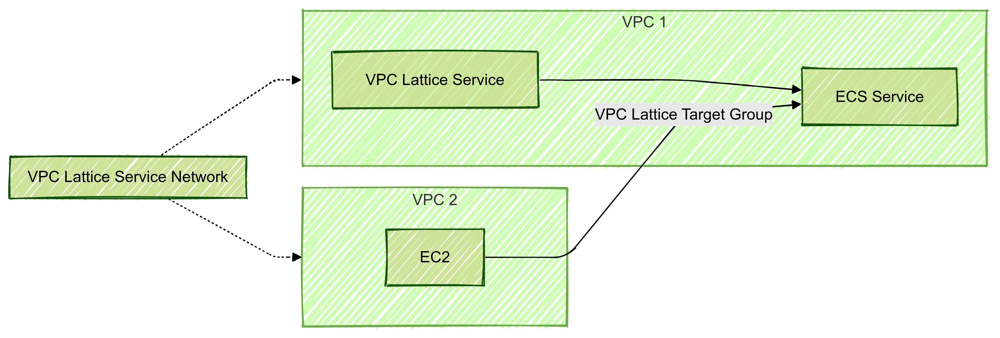

jedipunkz です。VPC Lattice が ECS に対応したという情報が https://aws.amazon.com/jp/about-aws/whats-new/2024/11/amazon-vpc-lattice-elastic-container-service/ にあがりました。この対応を Terraform を使って構成して検証してみるのが今回の目的になります。
今回検証で用いたコード
検証コードは下記に置いておきました。 https://github.com/jedipunkz/vpclattice-ecs-playground
概要
構成の概要としては下記です。(Mermaid 記表でうまく描けていませんが)
- VPC1, VPC2 に跨る形で VPC Lattice Service Network が配置
- VPC2 上の何者か (例で EC2) が VPC1 上の ECS に接続可能
- その際は VPC Service Network を介して VPC Lattice Service がエンドポイントとして受ける (うまく描けてない)
という事は今まで複数の VPC 間で ECS のエンドポイントを共有しようとすると
- VPC1, VPC2 とで VPC Peering を張る
- VPC1 上の Private Subnets 上で ALB を構築して ECS Service に接続する
という構成が必要でしたが、VPC Lattice を使えばそれらが不要になる、という事です。

今回検証した構成
今回使った Terraform コードで構築した構成は下記です。各 AWS リソースの関係図になっています。 特徴としては
- ECS 構成は Cluster, Service ,Task の通常の構成
- ECS Service に ALB ではなく VPC Lattice Target Group が紐づいている
- VPC Lattice Listner が VPC Lattice Service と VPC Lattice Target Group を紐づけている
- VPC Lattice Listner はリクエストを VPC Lattice Target Group に転送
- なおかつ VPC Lattice Listener にはヘルスチェック機能がある

Terraform コードを見て把握する
構成を理解するために各リソースの紐づけの指定を観点にコードを見ていきます。
ECS と VPC Lattice Target Group の紐づけ
ECS Service のパラメータです。通常は ALB を接続するパラメータを書くと思うのですが、VPC Lattice の場合は vpc_lattice_configrations となります。
vpc_lattice_configurations {
role_arn = aws_iam_role.ecs_infrastructure.arn
target_group_arn = aws_vpclattice_target_group.main.arn
port_name = "web-80-tcp"
}
VPC Lattice Listener の VPC Lattice Service, VPC Lattice Target Group の紐づけ
VPC Lattice Listener が VPC Lattice Service と VPC Lattice Target Group を紐づけている記述が下記になります。 つまりエンドポイントである VPC Lattice Service が Listener, VPC Lattice Target Group を介して ECS Service に接続している、という事です。
resource "aws_vpclattice_listener" "main" {
name = "http-80"
port = 80
protocol = "HTTP"
service_arn = aws_vpclattice_service.main.arn
service_identifier = aws_vpclattice_service.main.id
default_action {
forward {
target_groups {
target_group_identifier = aws_vpclattice_target_group.main.id
weight = 1
}
}
}
}
VPC Lattice Service Network と VPC Lattice Service の紐づけ
下記のような記述で VPC Lattice Service Network と VPC Latice Serivce が紐づいています。
resource "aws_vpclattice_service_network_service_association" "service_association" {
service_network_identifier = aws_vpclattice_service_network.main.id
service_identifier = aws_vpclattice_service.main.id
}
VPC と VPC Lattice Service Network の紐づけ
VPC と VPC Lattice Service Network が紐づいています。またセキュリティグループが設定されていて、VPC Lattice Service Network への通信が制御できるようになっています。
resource "aws_vpclattice_service_network_vpc_association" "vpc_association" {
security_group_ids = [aws_security_group.lattice_service_network.id]
service_network_identifier = aws_vpclattice_service_network.main.id
vpc_identifier = module.vpc.vpc_id
}
考察
導入メリットの観点
複数の VPC 間で ECS Serivce のエンドポイントを接続出来るのはメリットだと思います。またロードバランサが不要になったことも大きいです。ただご存知のように ALB は内部ノードが拡張することでスケールアウトするのですが VPC Lattice Service も拡張性を備えているのかは気になります。
パブリックにエンドポイントを出せるのかの観点
また今回は Private Subnet 上で構成しました。確かに VPC 上に EC2 等を起動して VPC Lattice Service のエンドポイントに curl を使ってアクセス出来ましたが、この構成が Public Subnet 上に展開出来るのかはまだ自分は分かっていません。軽く Public Subnet を指定して構築してみましたが外部から curl で VPC Lattice Service に接続出来ませんでした。DNS 的な問題が現れました。また ECS Service は Subnet の指定をしていますが Lattice 関連のリソースはサブネットの指定箇所が無いことに気が付きます。(もしかすると Terraform Document 等呼んでいくと指定箇所があるのかもしれないですが)。ですが VPC に跨る形で配置される Lattice の特徴を考えると出来ない気もします。このあたりは引き続き調査します。
備考
aws コンソールの問題
ちょうど先週発表された機能なので仕方ないのですが現時点では aws コンソールの機能に不十分な点が見受けられました (2024/11時点)
- ECS Service の VPC Lattice の設定画面で VPC を選択する事ができるがセキュリティグループを選択できないので default セキュリティグループになってしまう
- ECS Service の VPC Lattice の設定画面で一度設定した Lattice Target Group を削除して保存。その後、同じ画面で既存の Lattice Target Group を選択出来ないので新たに作らなくてはいけない
Terraform 検証にあたり注意点
手順を間違うと eni が削除出来ない問題に遭遇すると思います。terraform destroy すると下記のリソースが主に残ります。おそらく Terraform AWS Provider の不具合な気はしていますが確認したところ Issue には問題がありませんでした。新しい不具合な可能性もあります。この時点で aws コンソールで順にリソースを削除しようと考えると思うのですが ECS Cluster を削除しても ECS Service の Attacment? リソースが残り、結果 eni が消せません。eni が消せないので IGW, Subnet, VPC も消せない、という状況になります。
- VPC
- Subnet
- IGW
- ECS Cluster
- ECS Service